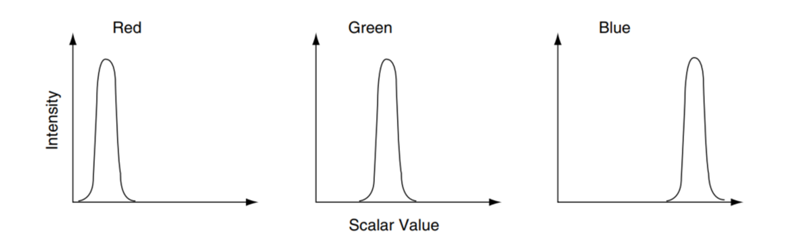
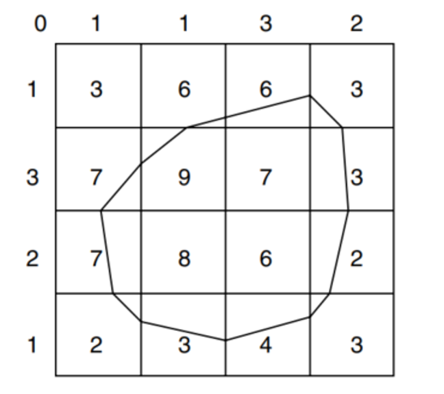

25.2. 科学可视化的类型#
25.2.1. 标量可视化#
标量可视化是将单一值（标量）数据转换为视觉表现（颜色）的过程。标量可视化可以视作颜色映射。颜色映射是一种常见的标量可视化技术，它将标量数据映射到颜色，并使用图形库的标准着色和阴影功能来显示这些颜色。以下是一个基本的定义式：
设 \(S\) 为定义在域 \(D\) 上的标量场，\(S:D \rightarrow \mathbb{R}\) ，其中 \(D\subseteq \mathbb{R}^n\)（通常 \(n\) = 2 或 3），\(\mathbb{R}\) 表示实数集。
颜色映射函数 \(C\) 可以定义为 \(C: [S_{\text{min}}, S_{\text{max}}] \rightarrow \text{Colors}\)，其中 \([S_{\text{min}}, S_{\text{max}}]\) 是 \(S\) 的值域，\(\text{Colors}\) 表示一组颜色。最终的可视化 \(V\) 可以表示为 \(V(x) = C(S(x))\) 对于所有 \(x \in D\)，其中 \(V: D \rightarrow \text{Colors}\)。这个表达式说明了如何将每个点 \(x\) 在域 \(D\) 中的标量值 \(S(x)\) 通过颜色映射函数 \(C\) 转换为一个颜色，从而实现可视化。
最直接的映射过程如下。查找表包含一组颜色数组（例如，红色、绿色、蓝色以及透明度分量或其他类似的表示）。与表格相关联的是一个最小和最大标量范围（min, max），标量值被映射到这个范围内。大于最大范围的标量值被限制到最大颜色，小于最小范围的标量值被限制到最小颜色值。具体的颜色映射公式为：
查找表的更通用形式被称为传递函数。传递函数是任何将标量值映射到颜色规格的表达式。

图 25.1 颜色映射表的形式。#
考虑到映射得到的颜色如果跃变过于显著会过于尖锐，可以按照一定的分布来呈现，参考图 25.2。

图 25.2 映射得到的颜色的分布。#
颜色映射的一个自然扩展是等高线绘制。当我们看到一个用数据值着色的表面时，眼睛常常将颜色相近的区域区分为不同的区域。当我们绘制等高线时，实际上就是在构造这些区域之间的边界。特定的边界可以表示为两个区域 \(F(x) < c\) 和 \(F(x) > c\) 之间的 \(n\) 维分隔面，其中 \(c\) 是等高线值，\(x\) 是数据集中的 \(n\) 维点。

图 25.3 一个简单的等值线测绘示意图。#
考虑这幅图中显示的 2D 结构化网格。标量值显示在定义网格的点旁边。绘制等高线始终是从指定定义要生成的等高线或表面的等高线值开始的。为了生成等高线，必须使用某种形式的插值。这是因为我们在数据集中有一组离散的（样本）点的标量值，而我们的等高线值可能位于点值之间。由于最常见的插值技术是线性的，我们通过沿边缘进行线性插值来在等高线表面上生成点。例如，如果一条边在其两个端点的标量值为10和0，并且我们试图生成值为5的等高线，则边缘插值计算等高线通过边缘的中点。一旦在单元格边缘生成了点，我们就可以使用几种方法将这些点连接成等高线。
把这个过程推广到一个大一点的2D温度场中，将会得到下面的等温线结果。

图 25.4 2D温度场的等温线可视化。#
对于等值线的连接一种方法是使用分而治之的技术，独立处理每个单元格。这在二维中称为“行进方块算法”（Marching Squares），在三维中称为“行进立方体算法”（Marching Cubes）。这些技术的基本假设是，等高线只能以有限的方式通过一个单元格。拓扑状态的数量取决于单元格顶点的数量以及顶点与等高线值相对的内部/外部关系的数量。如果顶点的标量值大于等高线的标量值，则认为该顶点在等高线内部。标量值小于等高线值的顶点则被认为在等高线外部。对于一个方形单元格，有16种组合。通过将每个顶点的状态编码为一个二进制数字，可以计算出案例表中的索引。对于三维数据，考虑到立方体单元格中有八个点，有256种不同的标量值组合。但是由于旋转平移对称性可以进一步缩减案例中的数目。由于我们这里主要讲可视化算法，关于Marching Cubes(行进立方体)的算法流程请参。图给出一些Marching Cubes算法的结果。

图 25.5 行进立方体算法的一些结果。#
25.2.2. 矢量可视化#
对于矢量场的可视化，常见的方法是使用箭头来表示矢量的方向和大小。如图\ref{fig:vec_field}展示了一些常用的箭头和用箭头表示的矢量场。

图 25.6 常用来描述矢量场的箭头和可视化的效果。#
设 \(\mathbf{V} \) 为定义在域 \(D\) 上的矢量场，其中 \(\mathbf{V}: D \rightarrow \mathbb{R}^n\)（通常 \(n\) = 2 或 3 ），表示每个点 \(x \in D\) 的矢量值。
箭头表示法包括两个关键部分：方向和大小（长度）。方向由矢量本身的方向决定，而长度可以是矢量大小的一个比例表示，涉及到一个缩放因子以控制可视化的尺度。
方向: 每个箭头的方向与矢量场 \(\mathbf{V}(x)\) 在点 \(x\) 的方向一致。可以用矢量的单位向量 \(\hat{\mathbf{v}}(x) = \frac{\mathbf{V}(x)}{\|\mathbf{V}(x)\|}\) 表示，其中 \(\|\mathbf{V}(x)\|\) 是矢量的大小（模长）。
长度）: 箭头的长度通常与矢量的大小成比例。可以定义为 \(L(x) = k \cdot \|\mathbf{V}(x)\|\)，其中 \(k\) 是缩放因子。
最终，矢量场的可视化 \(\mathbf{U}\) 可以表示为一组箭头，其中每个箭头的位置、方向和长度由 \(x\)、\(\hat{\mathbf{v}}(x)\) 和 \(L(x)\) 决定。这可以表示为 \(\mathbf{U}(x) = (\text{position: } x, \text{direction: } \hat{\mathbf{v}}(x), \text{length: } L(x))\)。
对于随着时间变化的矢量场，我们引入流线（streamlines）来表示。流线是用于可视化矢量场中流动模式的一种工具，特别是当矢量场随时间变化时。流线的核心概念是跟踪矢量场中一个虚拟粒子的路径。这个路径是基于矢量场在特定时间点的矢量方向和大小。
设 \(\mathbf{V}(x, t)\) 为定义在域 \(D\) 上的时间依赖矢量场，其中 \(x \in D\) 和 \(t\) 分别表示空间位置和时间。流线是通过在特定时间点 \(t\) 沿着矢量场的方向积分来得到的。
流线 \(\mathbf{F}(s)\) 可以定义为满足以下常微分方程的路径：
其中: \(s\) 是沿着流线的参数。\(\mathbf{F}(s)\) 是流线上点的位置。 \(\frac{d\mathbf{F}(s)}{ds}\) 表示流线上点位置关于参数 \(s\) 的变化率，这个变化率与矢量场 \(\mathbf{V}\) 在该点的值相等。
为了构建流线，你需要选择一个初始点 \(\mathbf{F}(s_0)\) 并积分上述方程。这可以通过数值方法实现，如欧拉方法或龙格-库塔方法。流线可视化在流体动力学、气象学和海洋学等领域中非常有用，它们帮助揭示流体流动的模式和结构。在动态矢量场中，流线可以用来表示特定时间点的流动特性，但不应用于展示流体随时间的实际运动路径。对于展示随时间变化的流动，通常使用路径线（Pathlines）或踪迹线（Streaklines），如图。

图 25.7 流线描述动态矢量场的效果。#
其他的一些流场的可视化例子如图 25.8 展示。

图 25.8 Jarke J. van Wijk, Image Based Flow Visualization ©http://www.win.tue.nl/~vanwijk/ibfv/#
标量场也常和矢量场叠加在一起来更清楚的表示可视化效果，一个常见的组合是天气预报时的温度场和风场，如图 25.9。

图 25.9 由（a）传统风旗和（b）流线与风旗组合描绘的风场和温度场。[D. H. F. Pilar and C. Ware, “Representing flow patterns by using streamlines with glyphs,” IEEE Trans. Vis. Comput. Graph., vol. 19, no. 8, pp. 1331–1341, Aug. 2013.]#
25.2.3. 张量场可视化#
张量可视化是一种将复杂的多维数据转换成直观图形的技术，常用于科学和工程领域中，如材料科学和医学成像领域。对于张量可视化来说，因为张量本身并不直观，所以张量可视化会采取一些已存在的局部基元特征来体现空间分布的张量信息。以下是三种常见的张量可视化方案：
箭头: 这些箭头通常是二维或三维的几何形状，如箭头、椭球或立方体，它们的方向、大小和形状可以变化以表示张量的不同属性。在医学成像中的一个典型应用是弥散张量成像（DTI），其中使用椭球形状来表示水分子在脑组织中的运动方向和强度。
纹理: 这种方法通常涉及将数据映射到一组规律的图案，如线条或点的集合，这些图案的密度、方向和颜色变化可以表示张量数据的变化。纹理可视化尤其适用于表示流场或其他连续的空间数据，因为它可以在整个区域内连续地展示数据变化。
几何: 几何方法使用更复杂的三维几何形状来表示张量数据。这可能包括通过流线、超流线（hyperstreamlines）或等值面（isosurfaces）来表示场中的特定特征。几何方法在提供空间上的直观感知方面尤其有效，因为它们可以直接展示数据结构和分布，使观察者能够从不同角度观察和分析数据。
每种方法都有其特定的应用场景和优势，选择哪一种取决于要可视化的数据类型和需要强调的数据特征。例如，箭头方案适合强调数据点的局部特征，而纹理和几何方案则更适合展示数据的整体流动和结构。图 1 和 图 2 给出相应的张量可视化效果。

图 25.10 通过箭头来可视化核磁共振图像。#

图 25.11 三种张量可视化的例子图。#
25.2.4. 表面数据和体数据可视化#
科学数据可视化的另一个划分是按照数据的空间信息的形式分成表面可视化（Surface Visualization）和体积可视化（Volume Visualization）。表 25.1 总结了两者的差异。
特性 |
表面可视化 |
体积可视化 |
|---|---|---|
数据类型 |
通常是二维或三维表面 |
三维体积数据 |
表示方法 |
边界和表面 |
整个数据体 |
细节展示 |
局部细节，如边缘 |
整体结构和内部细节 |
应用场景 |
工程设计，地形图 |
医学成像，科学模拟 |
可视化技术 |
网格，NURBS |
体绘制，体素渲染 |
鉴于前面章节已经介绍了表面网格和体积网格，我们便只展示一些可视化结果图，如图 25.12。

图 25.12 左图：使用 3D 等值面来可视化标量场，右图：对于生物组织的体渲染。#